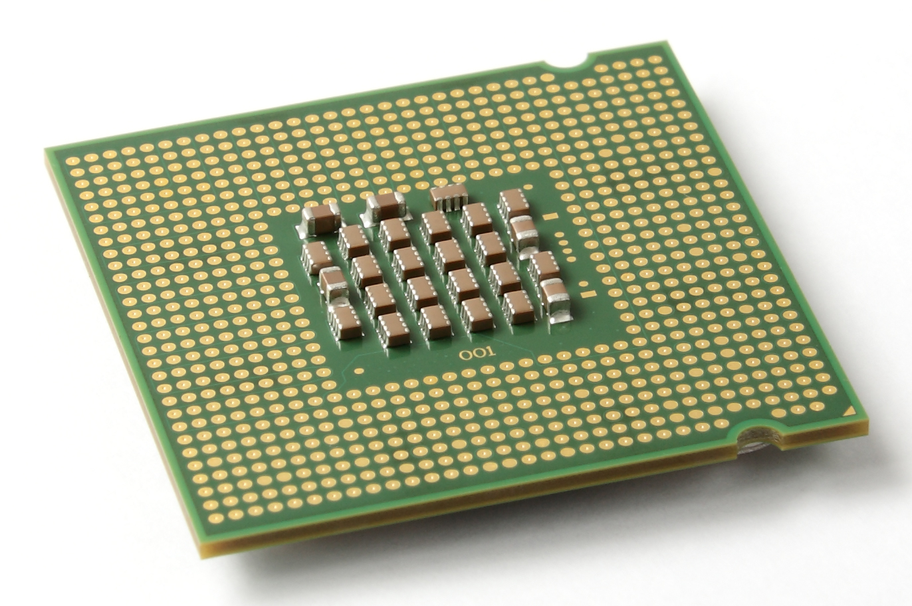

Motherboard meaning is a printed circuit board containing the principal components of a computer or other device, with connectors into which other circuit boards can be slotted. The Motherboard itself is a printed circuit board that allows the CPU, RAM, and all other computer hardware components to communicate with each other. There are huge variations in Motherboards from design, cases, power supply, size (Form Factor) and compatibility.Dec 20, 2013

Random is when it has access to the memory and a random access memory device that allows data items to be accessed

CPU is the brain of the computer. And it handles all the instructions you give to the computer and the faster it does this the better this is better
Hard drive is a storage that is the drives responsability and everything that you might keep your computer is a hard drive

Computer mouse is something that you can control your computer by moving the mouse were ever you want to click. And the keyboard is were you can type stuff